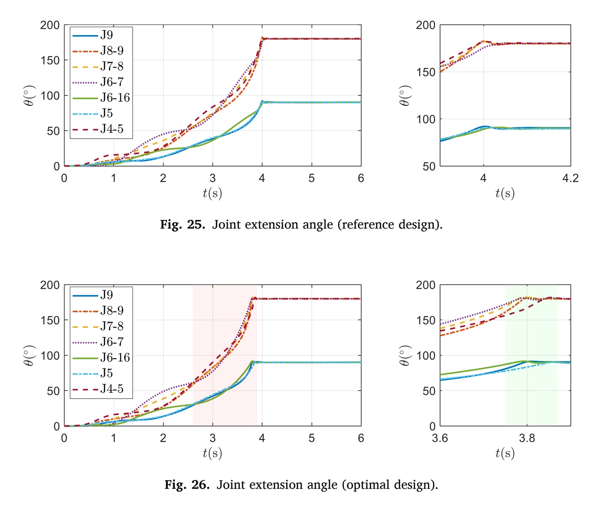
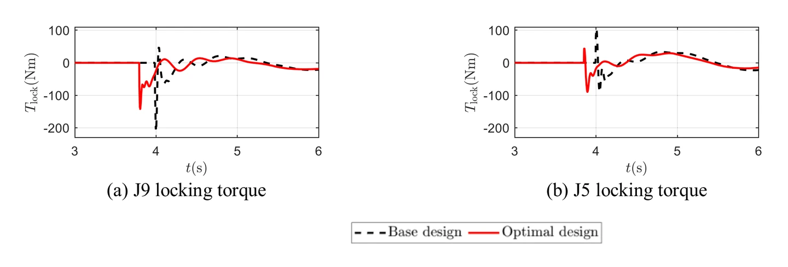
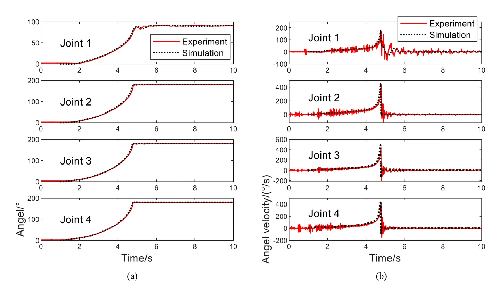

工程问题
骨架要把折起的遮光薄膜撑开。关节转角相差太大，杆件可能相碰。展开到位时，多个关节若同时锁定，冲击可能叠加。
我的贡献
我参与研究构思，整理试验数据、分析展开过程，并在绳轮建模研究中实现计算程序。两篇论文均由我担任第一作者。
方案与取舍
先用试验数据建立拉索经过滑轮时的传力模型，再比较不同的弹簧预载和拉索预张力组合。选出的方案让关节在展开中转角更接近，临近终点时略微错开锁定，以分散冲击。
验证与结果
带薄膜的小比例样机在地面对照试验中，平均角度偏差从 1.73° 降至 1.04°。全尺寸模型经地面试验校核，仿真显示最大锁定冲击力矩下降 8.27%，平均锁定冲击略有上升。



仿真显示，优化后各关节在展开后半程的转角更接近。论文图 25、26


两处关节的仿真曲线显示，优化后锁定冲击峰值降低，回弹减小。论文图 27


并列比较关节转角和角速度的仿真与实测结果。绳轮建模论文图 15
展开视频
相关论文
- Element-free rope pulley calculations: Advancing deployable skeleton performance optimization · Results in Engineering，2025
- Deploying in concert: Transient-dynamics-driven synchronization optimization for the deployable skeleton · Aerospace Science and Technology，2026 年在线发表